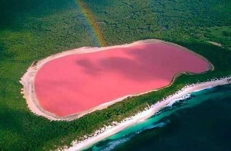

Magnifique, ancienne, élégante, belle, agréable, galante, grandiose… Visiter lE SENEGAL se fait forcément aux côtés d’une longue liste de superlatifs.
Et encore, aucun ne suffit à décrire le SENEGAL et sa splendeur.
SINE-SALOUM
Le Sine Saloum est une région naturelle qui se trouve au Nord de la Gambie et au sud de la Petite-Côte au Sénégal. Sa superficie est de 180 000 hectares. C'est dans cette région naturelle que se trouve le Parc national du delta du Saloum. C'est un delta formé par la confluence de deux fleuves, le Sine et le Saloum. C'est également un bras de mer laissant entrer l'eau salée de plus en plus profondément dans les terres car le débit des deux fleuves est assez lent. Il y a bien longtemps, les royaumes sérères du Sine (capitales : Diakhao, Mbissel) et du Saloum (capitale : Kahone) étaient rivales. Depuis 1984, deux régions administratives, le Kaolack et le Fatick.
MONUMENT DE LA RENAISSANSE
Le Monument de la Renaissance africaine est un groupe monumental de 52 mètres en bronze et cuivre1 à Ouakam, une commune d'arrondissement de Dakar, sur l'une des deux collines volcaniques coniques qui surplombent la capitale sénégalaise, les Mamelles, la plus haute portant déjà le phare des Mamelles. Le monument représente un couple et son enfant, dressés vers le ciel. Il est officiellement inauguré le 3 avril 2010 lors des cérémonies du cinquantenaire de l'indépendance du Sénégal.

LAC ROSE
Le lac Rose, de son vrai nom lac Retba, est l'un des sites les plus visités du Sénégal. Ce lac salé doit sa renommée à la teinte originale et changeante de son eau, mais aussi au rallye Paris-Dakar dont il constituait l’ultime étape.Sa couleur rose orangé est due à Dunaliella salina, une algue verte halophile, organisme microscopique qui fabrique, surtout quand le ciel n'est pas couvert (donc plutôt en période sèche de novembre à juin), l'astaxanthine, un pigment rouge de la famille des carotènes qui lui permet de mieux résister aux forts rayons solaires et à la concentration de sel.

LE FAMEUX "THIEBOUDIEUNE"
Il existe deux sortes de thieb. Le premier est le thiéboudiène, thiéboudienne (parfois orthographié tieb bou dien et souvent abrégé en tieb [qui est d’ailleurs une erreur. Il est appelé par les locaux « tiep ».]) ou encore ceebu jën (littéralement en wolof « riz au poisson »). Le second est le thiebouyappe, constitué avec le même thieb mais en remplaçant le poisson par de la viande. Il s'agit des plats les plus célèbres de la cuisine sénégalaise, le plat national.